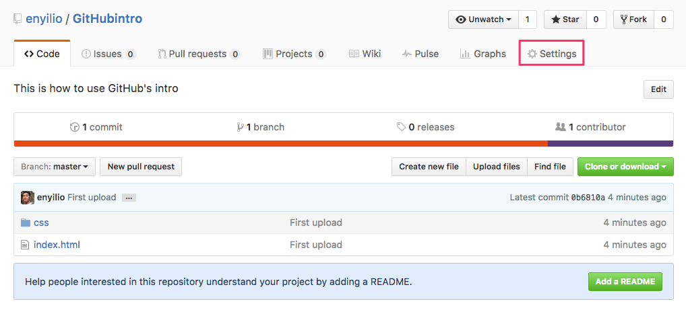
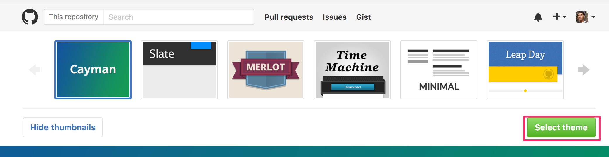
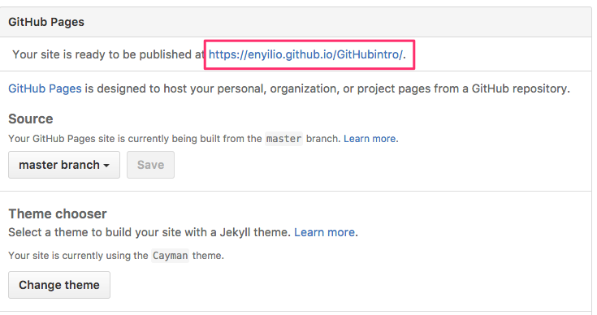

GitHub入門教學(三)-建立GitHub個人網頁
若想要在GitHub上建立網頁供他人瀏覽，可以到該儲存庫的GitHub頁面，按下右上角Settings

進入Settings頁面，下方有個GitHub Pages，請選擇Choose a theme

再點選Select theme

GitHub頁面就建立完成，網址的名稱如下圖所示：

小技巧：
GitHub可以建立個人網址頁面，通常網址為:帳號名稱.github.io
例如我的帳號enyilio，那麼個人頁面就是enyilio.github.io
如何快速建立個人網址頁面呢？只要在新增New Repository時，Repository name輸入帳號名稱.github.io，接著同上步驟，這樣就可以快速建立個人頁面囉！